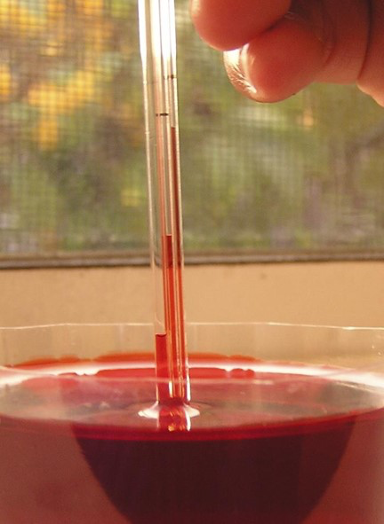
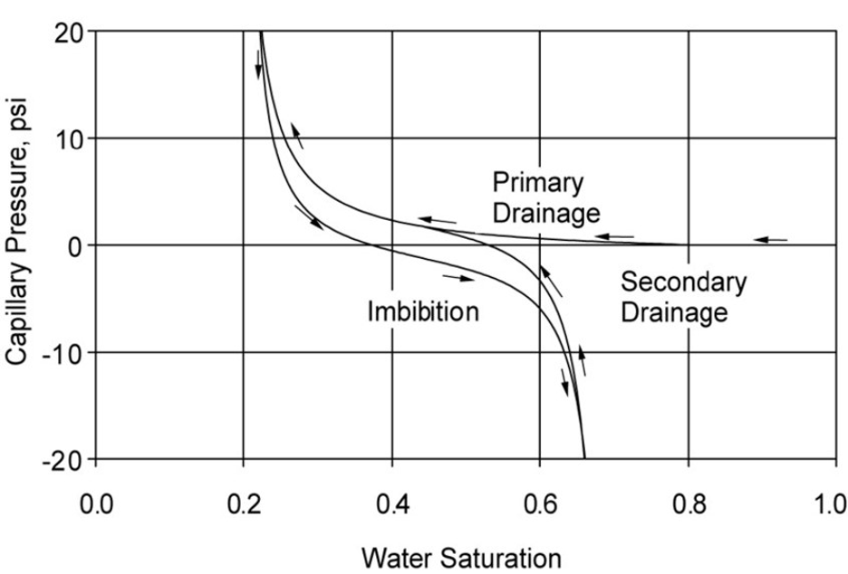
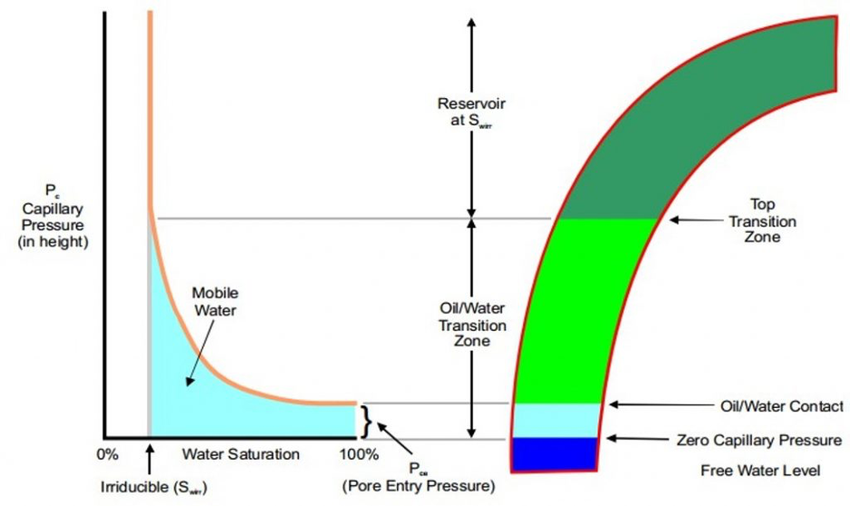
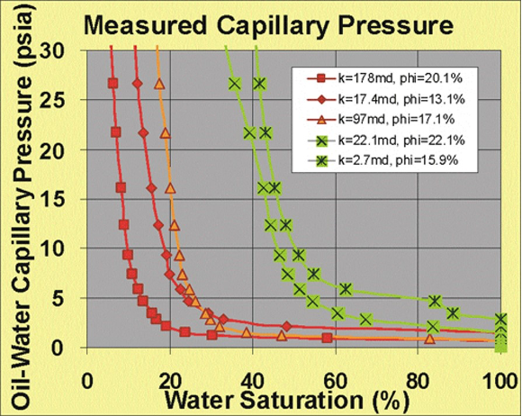

Introduction
Believe it or not, capillarity is not a rare phenomenon nor a complex thing to understand. There is a big possibility that you have been seeing it in everyday life. From the dripping water in your kitchen tap (Figure 1). When you try shake the ketchup bottle to push the last drop of sauce. To why your tree in the backyard can get water from underground soil. The capillarity force is the key to understand all of that.
Interestingly, this process also plays a big part in geology, especially in rock-fluid interaction. One of its importance is an imbibition-drainage process and saturation-height function. The first is responsible for what we know as hydrocarbon migration and production, while the second is why we will always have a certain amount of water in the reservoir (Swirr), and a certain amount of oil/gas that will never be produced (Sor, Sog).
In this short article, we will try to explain capillarity forces in reservoir rock. Its characteristics, some factors that affect it, the importance and the application of capillarity data in the petrophysical analysis.
Rock-Fluid Interaction
Long story short, capillary force is a pressure that “pull” the red liquid in the glass (Figure 2). This pressure is affected by several factors, which are: density of the air and water (red liquid), the pore throat radius (straw radius), and the inter-facial tension between two liquids.
Analog to this, in the reservoir rock, the fluid is a hydrocarbon, while the straw is the pore throat (a connected porosity). One is coming as a property of the fluid, one is coming as a property of the fluid, one is coming from the property of the rock, A rock-fluid interaction.
Since the fluid inside our reservoir is either oil, gas, water, or combination. Capillary pressure will depend on the size of the pore throat, a function of rock properties. The smaller the pore throat, the higher the liquid saturation is. From Pc data, we will be able to understand how much maximum fluid can be held (saturation) by a certain size of pore throat radius.

Imbibition-Drainage

The principal data of Capillary Pressure (Pc) only consists of two data. Water saturation (in X-axis) and Capillary Pressure; Pc (in Y-axis). The figure beside (Figure 3) is the example data from the oil- water system. There are two sets of curves inside each graph, which we called as drainage and imbibition.
Drainage is the decrease of water (wetting phase) and imbibition is the increase of water (wetting phase). Simply, the drainage is when the hydrocarbon is migrating and its buoyancy force pushed water out of reservoir rock and filled the pore with hydrocarbon. On the other way, imbibition is when the hydrocarbon is pushed away from pores. The first (drainage) is analog to the migration phase, the latter (imbibition) is analog to the production phase.
The first (drainage) is analog to the migration phase, the latter (imbibition) is analog to the production phase.
Sw-Pc Relationship

In a bigger picture, there is a strong relationship between Pc data and the change of water saturation throughout our reservoir compartment (Figure 4, an Oil-Water System example). Three zones are depending on the Pc-Sw relationship data:
Water Zone (the zone between zero Pc and OWC/ Pore entry pressure). This is the zone that will produce only water. As based on Pc, HC pressure needed to be higher than entry pressure to be able to push water out of pores and filled pores with HC.
Transition Zone (the zone between Top Transition Zone, where the Pc-Sw curve is starting to reach asymptote and OWC). This zone will be producing water and oil, a mix of fluids.
Oil Zone (the zone above Top Transition Zone). Based on Pc data, it can be seen that there is no decrease in Sw even though Pc increased. At this zone, all of the water is irreducible (the pressure, no matter how high it is, simply will not be able to push water out of the pores). This zone will produce only Oil.
“Pc data can tell a lot of information about how our reservoir behave (rock-fluid interaction), from top to bottom reservoir”
Of course, the amount of water produced from the reservoir (Water Cut) will also depend on relative permeability. Nonetheless, the Pc data can tell a lot of information about how our reservoir behaves (rock-fluid interaction), from top to bottom reservoir. Where can we expect oil, where we can expect oil and water (mix), and where we can only expect water.
Swirr-Perm Relationship
From a bigger picture to a smaller scale such as a reservoir. Pc data also plays a part in understanding our reservoir.
Based on Pc data, we know that the bigger the pore throat radius, the less water saturation irreducible is.
“The bigger the pore throat radius, the higher the permeability, the less the Swirr (the higher the Shc that can be produced)”

We also know that from the Kozeny-Carman experiment, that if the fluid pathway is analogous to the tube, the bigger the radius of the tube, the higher the permeability is.
Assuming the pore throat radius is the same as effective porosity, we can conclude that the bigger the permeability, the bigger the pore throat radius. The bigger the pore throat radius, the higher the permeability, the less the Swirr (the higher hydrocarbon that can be produced), as can be seen in Figure 5.
This is usually called a good rock-type (most left data on the chart). Where the properties of the rock are so good, and the hydrocarbon that can be produced is high. All of these can be done using Pc data.